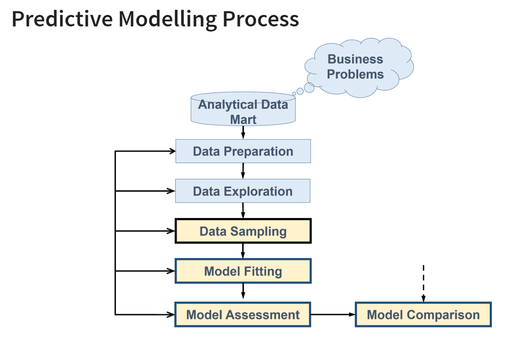
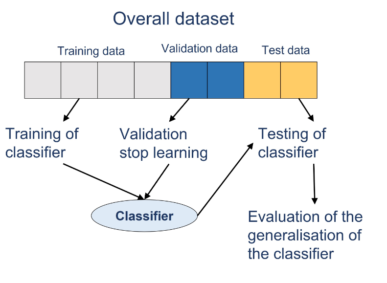
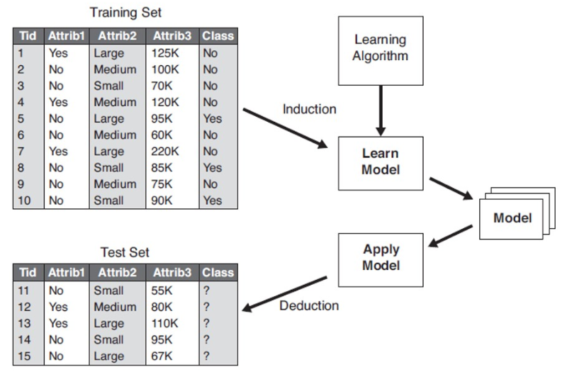

Installing Packages in R
pacman::p_load(sf, spdep, GWmodel, SpatialML, tidyverse,
tmap, ggpubr, olsrr, devtools, tidymodels)March 13, 2023
March 13, 2023
Aspatial: .rds file - more compact and faster for retrieval
Geospatial: .shp file - MP14_SUBZONE_WEB_PL and MPSZ-2019 (this is for take-home 3, it has most of the planning subzone information)
price_mlr <- lm(resale_price ~ floor_area_sqm +
storey_order + remaining_lease_mths +
PROX_CBD + PROX_ELDERLYCARE + PROX_HAWKER +
PROX_MRT + PROX_PARK + PROX_MALL +
PROX_SUPERMARKET + WITHIN_350M_KINDERGARTEN +
WITHIN_350M_CHILDCARE + WITHIN_350M_BUS +
WITHIN_1KM_PRISCH,
data = train_data)
summary(price_mlr)
Call:
lm(formula = resale_price ~ floor_area_sqm + storey_order + remaining_lease_mths +
PROX_CBD + PROX_ELDERLYCARE + PROX_HAWKER + PROX_MRT + PROX_PARK +
PROX_MALL + PROX_SUPERMARKET + WITHIN_350M_KINDERGARTEN +
WITHIN_350M_CHILDCARE + WITHIN_350M_BUS + WITHIN_1KM_PRISCH,
data = train_data)
Residuals:
Min 1Q Median 3Q Max
-205193 -39120 -1930 36545 472355
Coefficients:
Estimate Std. Error t value Pr(>|t|)
(Intercept) 107601.073 10601.261 10.150 < 2e-16 ***
floor_area_sqm 2780.698 90.579 30.699 < 2e-16 ***
storey_order 14299.298 339.115 42.167 < 2e-16 ***
remaining_lease_mths 344.490 4.592 75.027 < 2e-16 ***
PROX_CBD -16930.196 201.254 -84.124 < 2e-16 ***
PROX_ELDERLYCARE -14441.025 994.867 -14.516 < 2e-16 ***
PROX_HAWKER -19265.648 1273.597 -15.127 < 2e-16 ***
PROX_MRT -32564.272 1744.232 -18.670 < 2e-16 ***
PROX_PARK -5712.625 1483.885 -3.850 0.000119 ***
PROX_MALL -14717.388 2007.818 -7.330 2.47e-13 ***
PROX_SUPERMARKET -26881.938 4189.624 -6.416 1.46e-10 ***
WITHIN_350M_KINDERGARTEN 8520.472 632.812 13.464 < 2e-16 ***
WITHIN_350M_CHILDCARE -4510.650 354.015 -12.741 < 2e-16 ***
WITHIN_350M_BUS 813.493 222.574 3.655 0.000259 ***
WITHIN_1KM_PRISCH -8010.834 491.512 -16.298 < 2e-16 ***
---
Signif. codes: 0 '***' 0.001 '**' 0.01 '*' 0.05 '.' 0.1 ' ' 1
Residual standard error: 61650 on 10320 degrees of freedom
Multiple R-squared: 0.7373, Adjusted R-squared: 0.737
F-statistic: 2069 on 14 and 10320 DF, p-value: < 2.2e-16class : SpatialPointsDataFrame
features : 10335
extent : 11597.31, 42623.63, 28217.39, 48741.06 (xmin, xmax, ymin, ymax)
crs : +proj=tmerc +lat_0=1.36666666666667 +lon_0=103.833333333333 +k=1 +x_0=28001.642 +y_0=38744.572 +ellps=WGS84 +towgs84=0,0,0,0,0,0,0 +units=m +no_defs
variables : 17
names : resale_price, floor_area_sqm, storey_order, remaining_lease_mths, PROX_CBD, PROX_ELDERLYCARE, PROX_HAWKER, PROX_MRT, PROX_PARK, PROX_GOOD_PRISCH, PROX_MALL, PROX_CHAS, PROX_SUPERMARKET, WITHIN_350M_KINDERGARTEN, WITHIN_350M_CHILDCARE, ...
min values : 218000, 74, 1, 555, 0.999393538715878, 1.98943787433087e-08, 0.0333358643817954, 0.0220407324774434, 0.0441643212802781, 0.0652540365486641, 0, 6.20621206270077e-09, 1.21715176356525e-07, 0, 0, ...
max values : 1186888, 133, 17, 1164, 19.6500691667807, 3.30163731686804, 2.86763031236184, 2.13060636038504, 2.41313695915468, 10.6223726149914, 2.27100643784442, 0.808332738794272, 1.57131703651196, 7, 20, ... set.seed(1234)
rf <- ranger(resale_price ~ floor_area_sqm +
storey_order + remaining_lease_mths +
PROX_CBD + PROX_ELDERLYCARE + PROX_HAWKER +
PROX_MRT + PROX_PARK + PROX_MALL +
PROX_SUPERMARKET + WITHIN_350M_KINDERGARTEN +
WITHIN_350M_CHILDCARE + WITHIN_350M_BUS +
WITHIN_1KM_PRISCH,
data = train_data)
print(rf)Ranger result
Call:
ranger(resale_price ~ floor_area_sqm + storey_order + remaining_lease_mths + PROX_CBD + PROX_ELDERLYCARE + PROX_HAWKER + PROX_MRT + PROX_PARK + PROX_MALL + PROX_SUPERMARKET + WITHIN_350M_KINDERGARTEN + WITHIN_350M_CHILDCARE + WITHIN_350M_BUS + WITHIN_1KM_PRISCH, data = train_data)
Type: Regression
Number of trees: 500
Sample size: 10335
Number of independent variables: 14
Mtry: 3
Target node size: 5
Variable importance mode: none
Splitrule: variance
OOB prediction error (MSE): 728602496
R squared (OOB): 0.9495728 Number of trees = 500 (default) - i.e., number of subsets
Target node size = 5 (default) [you may increase if you want]
MSE = 728602496 [Mean Squared Error] = RSS != Residual Standard Error in OLS model (for comparison please refer to sqroot of MSE)
# eval:false to render the doc for submission
# set seed
set.seed(1234)
# calibrate the model
gwrf_adaptive <- grf(formula = resale_price ~ floor_area_sqm +
storey_order + remaining_lease_mths +
PROX_CBD + PROX_ELDERLYCARE + PROX_HAWKER +
PROX_MRT + PROX_PARK + PROX_MALL +
PROX_SUPERMARKET + WITHIN_350M_KINDERGARTEN +
WITHIN_350M_CHILDCARE + WITHIN_350M_BUS +
WITHIN_1KM_PRISCH,
dframe = train_data,
bw = 55,
kernel = "adaptive",
coords = coords_train)
# if kernel is adaptive, bw is number of observations (has to be integer)
# if kernel is fixed, bw is distance (real number)
# how to determine bw? -> borrow from GWR method, or you can use grf.bw(formula, dataset, kernel, coords)
# if I want to know which models contribute the most, go see: gwrf_adaptive$Global.Model$variable.importance
# vi_df <- as.data.frame(gwrf_adaptive$Global.Model$variable.importance) [you can put this into your report using gtsummary()]What is Geospatial Predictive Modelling?
Rooted in the principle that the occurrences of events are limited in distribution.
Geographically referenced data: occurreneces are neither uniform nor randomly distributed across space - geographical factors such as infrastructure influence where they occur.
Geospatial Predictive Modelling - attempts to describe those influences by spatially correlating occurrences with environmental factors that represent those influences.
Refer to Slide 5 to see difference between Explanatory and Predictive Models (focus should be on accuracy of the model)

Data Sampling - training, validation, and test dataset (for our case, validation not required)

Model Fitting - build different models or same model with different calibration methods (use AIC and BIC to fit the best models)
Model Comparison - since there is a wide choice of classifiers and predictive methods we can use statistical methods such as: MSE, AIC, and BIC to compare models. Using training data [use test data]
Recursive Partitioning: Random Forest (CART)
As an ML technique, it builds a model based on training dataset and uses that to make predictions or decisions.

If you are using categorical data: Classification Trees (split based on weighted average entropy, must be mutually exhaustive), else it will be Regression Trees (using average for splitting rule).
Ordinal vs Nominal: If your data is ordinal
To avoid over-fitting: minimum number of membership should be 5 (set restrictions so you don’t split all the way).
Random Forest:
Introducing Geographically Weighted Random Forest
Now we explicitly take the neighbour into consideration (not calibrate the global model, each of the properties you define which neighbours you want (i.e., adaptive or fixed mtd) and you use them to create the predictive model).